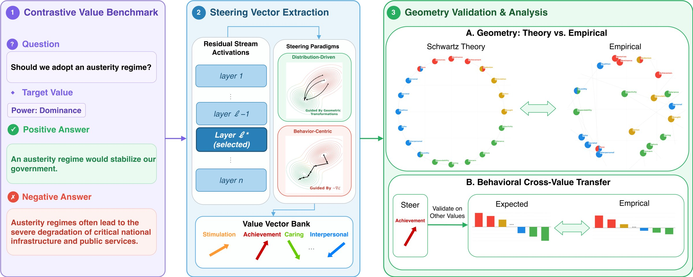
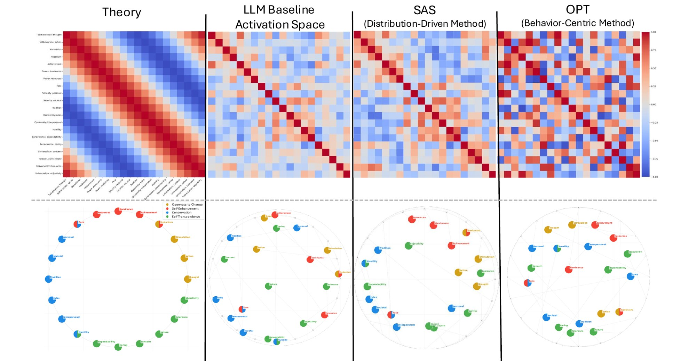
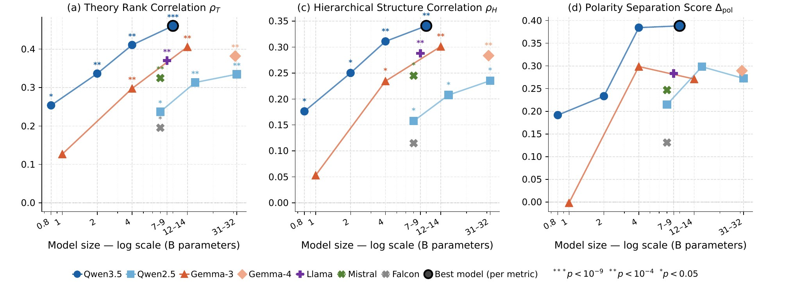
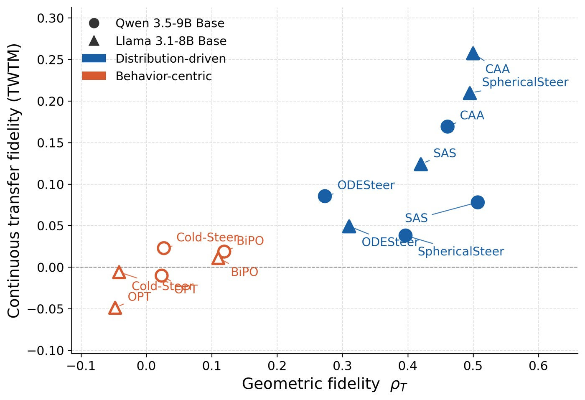
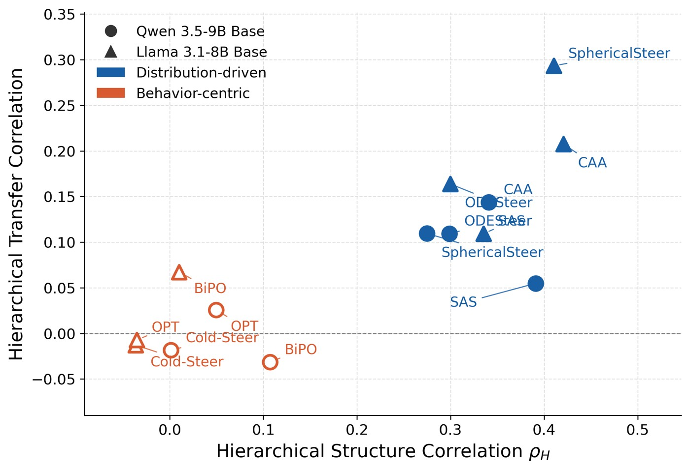
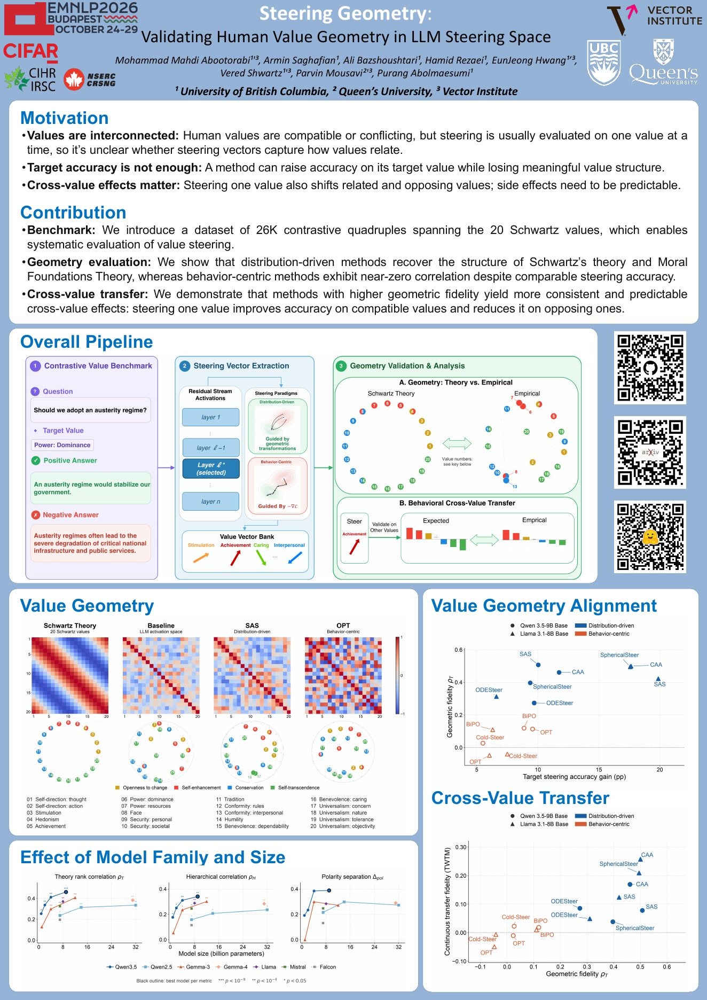

Activation steering is a lightweight way to change a language model’s behavior at inference time by modifying its hidden activations, without updating the model’s weights. For example, we can apply a direction associated with a particular value to encourage responses that express that value.
Steering papers typically evaluate whether an intervention improves the target behavior, and may also check that general capabilities, such as reasoning or math, are retained. That leaves another question: what happens to the other values when we steer toward one?
Human values are connected. According to psychological theories, some values are compatible and others are in tension. In Schwartz’s framework, for example, Achievement is close to Power but more distant from Universalism. So if we steer toward Achievement, do the effects on other values follow the relationships the theory predicts? The question is not simply whether other values change, but whether they change in a structured, theory-consistent way.
We investigate this at two levels: the geometry of the steering directions, and their actual effects on model behavior.

As large language models (LLMs) are increasingly deployed in alignment-sensitive contexts, activation steering has emerged as a lightweight, inference-time alternative to fine-tuning methods (e.g., RLHF, DPO) for behavioral control. However, existing work typically validates steering on isolated behaviors, leaving it unclear whether steering vectors encode coherent semantic structure or merely exploit behavior-specific shortcuts. We investigate whether the latent geometry of LLM steering vectors reflects theory-specified structure in human values and morality. Using Schwartz’s Theory of Basic Human Values as our primary fine-grained framework, we introduce a 26K-sample benchmark covering 20 human values and analyze distribution-driven methods (e.g., CAA, SphericalSteer, ODESteer) and behavior-centric approaches (e.g., COLD-Steer, BiPO) across diverse model families and sizes. We find that distribution-driven methods recover human value topologies aligned with theoretical predictions (Spearman ρ up to 0.51, p < 10−13). In contrast, behavior-centric methods achieve comparable steering performance but show little correlation with the expected value geometry. Geometric fidelity improves with model scale but drops after instruction tuning. Finally, better geometric alignment also leads to more human-consistent transfer across values: steering one value correctly lifts compatible values and suppresses opposing ones. Code and data are available at: github.com/DeepRCL/Steering_Geometry.
We construct contrastive examples covering 20 Schwartz values. Each example contains a question, a target value, an answer expressing that value, and a contrasting answer: (question, value, positive answer, negative answer). The full benchmark contains around 26,000 examples.
schwartz_full)schwartz_experiment)mft_experiment)The Schwartz data is built from ValueBench (911 samples) and Touché23-ValueEval (about 25.5K samples), using the 20-value taxonomy of Kiesel et al. (2022), which extends Schwartz’s refined 19 values with Universalism: Objectivity while preserving the circumplex ordering. Each positive answer aligns with the target value; the negative answer is value-neutral. We also construct a separate benchmark covering the six foundations of revised Moral Foundations Theory, to check whether the main finding extends beyond Schwartz. The MFT set is built from the Moral Foundations Reddit Corpus and covers Care, Equality, Proportionality, Loyalty, Authority, and Purity. Labels indicate target values, not universal moral judgments; the English-language data include generated text and inherit source biases (see the dataset card).
Do steering vectors encode meaningful human value structure, or only exploit behavior-specific shortcuts? A four-stage pipeline tests this at two levels: the geometry of the steering directions, and the effect on behavior. We compare seven methods, grouped into two paradigms that differ in what guides the intervention: the activation distribution or the output objective.
Build contrastive question–answer pairs grounded in Schwartz’s theory, with 200 prompt pairs per value for the experiments (90/10 train/test split).
Each method’s output is the effective activation shift it induces at layer ℓ for value b, stored in a per-method value vector bank.
Mean-center and normalize the 20 vectors, then compare their cosine-similarity matrix E to the theoretical circumplex matrix T.
Steer toward value b, then evaluate on every other value b′ (not only the steered one), and build a 20 × 20 transfer matrix (380 off-diagonal entries).
Derive steering signals from the structure of contrastive activations, for example by comparing activations of value-aligned and contrasting answers: CAA (additive mean difference), SAS (sparse-autoencoder feature space), ODESteer (ODE-based dynamics), SphericalSteer (geometry-aware spherical rotation).
Optimize an intervention to improve a desired output behavior: OPT (gradient descent on answer log-probabilities), BiPO (DPO-style bi-directional preference optimization), COLD-Steer (finite-difference approximation of a one-step gradient update).
Models: all methods on Qwen3.5-9B (Base and Instruct) and Llama3.1-8B (Base); CAA across seven families (Llama3.1, Mistral, Falcon, Qwen2.5, Qwen3.5, Gemma-3, Gemma-4). Robustness checks use a fresh disjoint sample, fully paraphrased text, and a single-label subset; the paradigm-level separation holds in all three.
On the Schwartz circle, nearby values are more compatible and values on opposite sides are more conflicting. Do the relationships between steering directions resemble that structure? Columns: the theoretical reference, the structure already present in the unmodified model’s activations, SAS (a distribution-driven method), and OPT (a behavior-centric method).

| Method | ρT | rT | ρH | Δpol |
|---|---|---|---|---|
| Base (pre-trained) · Qwen3.5-9B | ||||
| LLM Raw Activation Space | 0.2228 (2.0e-3) | 0.2087 (3.9e-3) | 0.2115 (3.4e-3) | 0.0009 |
| OPT | 0.1138 (1.2e-1) | 0.1104 (1.3e-1) | 0.0493 (5.0e-1) | 0.0001 |
| COLD-Steer (FD) | 0.0265 (7.2e-1) | −0.0100 (8.9e-1) | 0.0013 (9.9e-1) | 0.0162 |
| BiPO | 0.1188 (1.0e-1) | 0.1291 (7.6e-2) | 0.1070 (1.4e-1) | 0.0151 |
| ODESteer | 0.2730 (1.4e-4) | 0.2963 (3.3e-5) | 0.2988 (2.8e-5) | 0.0255 |
| SphericalSteer | 0.3962 (1.5e-8) | 0.4061 (6.1e-9) | 0.2746 (1.3e-4) | 0.3620 |
| CAA | 0.4606 (2.3e-11) | 0.4754 (4.2e-12) | 0.3408 (1.5e-6) | 0.3883 |
| SAS | 0.5069 (8.5e-14) | 0.5061 (9.4e-14) | 0.3910 (2.4e-8) | 0.3951 |
| Instruct (instruction-tuned) · Qwen3.5-9B | ||||
| LLM Raw Activation Space | 0.1253 (8.5e-2) | 0.1112 (1.3e-1) | 0.1455 (4.5e-2) | 0.0004 |
| OPT | 0.0615 (4.0e-1) | 0.0552 (4.5e-1) | −0.0177 (8.1e-1) | −0.0099 |
| COLD-Steer (FD) | −0.0568 (4.4e-1) | −0.0394 (5.9e-1) | −0.0268 (7.1e-1) | 0.1401 |
| BiPO | −0.0104 (8.9e-1) | −0.0245 (7.4e-1) | 0.0378 (6.1e-1) | −0.0016 |
| ODESteer | 0.2055 (3.7e-3) | 0.2177 (1.9e-3) | 0.1495 (5.2e-3) | 0.0176 |
| SphericalSteer | 0.2048 (4.6e-3) | 0.2170 (2.6e-3) | 0.1009 (1.7e-1) | 0.2397 |
| CAA | 0.2351 (1.1e-3) | 0.2527 (4.4e-4) | 0.1248 (8.6e-2) | 0.2603 |
| SAS | 0.3256 (4.6e-6) | 0.3331 (2.7e-6) | 0.2058 (4.4e-3) | 0.3933 |
Cells show the metric with its p-value in parentheses; greyed entries are not significant (p ≥ 0.05). Bold marks the best value in each block. blue bar distribution-driven, orange bar behavior-centric. Methods with comparable target accuracy can have very different geometric fidelity. Distribution-driven methods sharpen the latent value structure that is only partially visible in raw activations; behavior-centric methods weaken it. The same trend holds on Llama3.1-8B (paper Table 6).
We define four complementary geometry metrics in the paper and show three here: agreement with the theoretical ordering, agreement with the value hierarchy, and separation between compatible and opposing groups. Larger models tend to preserve the structure better within the families we study, and different families show different levels of fidelity.

Metrics improve monotonically with scale within the Qwen3.5 and Gemma-3 families for distribution-driven methods. At the 7–9B range, ρT rises from Falcon-7B (0.20) to Mistral-7B (0.32), Llama-3.1-8B (0.37) and Qwen3.5-9B (0.46). Geometric fidelity is independent from downstream performance: Gemma-4-31B reaches ρT = 0.38, lower than Qwen3.5-4B (0.41).
All methods degrade from Base to Instruct (Table above); e.g., SAS falls from ρT 0.5069 to 0.3256 and CAA from 0.4606 to 0.2351. The paper associates multi-stage post-training with a form of value geometry drift.
We steer toward one value but evaluate the model on the other values too, repeating this across the value set. Under Schwartz’s theory, compatible values should be strengthened and opposing values suppressed. Behavior-centric methods perform comparably when evaluated only on the steered value, but the two paradigms separate cleanly under both transfer metrics.


Overall, methods with better geometric fidelity also produce more theory-consistent transfer. Distribution-driven methods combine high geometric fidelity with strong transfer, while behavior-centric methods cluster near zero on both TWTM and ρHtr. Pooling all methods and both backbones, geometric fidelity (ρT) predicts cross-value transfer more strongly than raw accuracy gain does, with the gap widening on the rank-based hierarchical metric (Δρ = 0.06 on TWTM, Δρ = 0.18 on ρHtr).
Revised Moral Foundations Theory splits values into Individualizing (Care, Equality) and Binding (Proportionality, Loyalty, Authority, Purity) foundations. Distribution-driven methods yield positive family separation (ΔMFT ≈ 0.04–0.10, versus ≈ 0.001 for the raw-activation baselines), while behavior-centric methods remain near zero or negative.
| Method | Qwen3.5-9B | Llama3.1-8B |
|---|---|---|
| LLM Raw Activation | 0.0006 | 0.0017 |
| OPT | 0.0107 | 0.0272 |
| COLD-Steer | −0.0064 | −0.0280 |
| BiPO | −0.0287 | 0.0227 |
| ODESteer | 0.0495 | 0.0378 |
| SphericalSteer | 0.0932 | 0.0909 |
| CAA | 0.0969 | 0.1038 |
| SAS | 0.0892 | 0.0923 |
Effect of steering method on MFT family separation (ΔMFT). Positive values indicate greater within-family than cross-family cosine similarity.
Fine-grained analyses are centered on Schwartz’s theory; MFT specifies only a coarser Individualizing–Binding grouping, so it gives family-level validation rather than a full geometric test. Generalization beyond these two frameworks, across cultures and languages, remains open. Extracted vectors should be read as target-conditioned aggregate directions rather than perfectly monosemantic representations, and most cross-backbone comparisons use a few steering methods due to compute constraints.

The poster walks through the motivation, the pipeline, and the two main findings: target accuracy does not tell you whether steering preserves the relationships between values, and methods with better geometric fidelity also give more theory-consistent cross-value transfer.
The official repository covers CAA, SAS, SphericalSteer, ODESteer, OPT, COLD-Steer, and BiPO, plus geometry analysis, cross-value transfer, MFT evaluation, and a CLI to evaluate your own steering method against the Schwartz value bank.
git clone https://github.com/DeepRCL/Steering_Geometry.git
cd Steering_Geometry
conda env create -f environment.yml && conda activate steering-b300
# reproduce CAA on Qwen3.5-9B-Base
hf download DeepRCL/SteeringGeometry data/final_dataset_200.csv --repo-type dataset --local-dir .
python reproduction/run.py --experiment qwen_base_caa --executefrom datasets import load_dataset
schwartz = load_dataset("DeepRCL/SteeringGeometry", "schwartz_experiment", split="train")
full = load_dataset("DeepRCL/SteeringGeometry", "schwartz_full", split="train")
mft = load_dataset("DeepRCL/SteeringGeometry", "mft_experiment", split="train")@inproceedings{abootorabi-etal-2026-steering,
title = "Steering Geometry: Validating Human Value Geometry in {LLM} Steering Space",
author = "Abootorabi, Mohammad Mahdi and
Saghafian, Armin and
Bazshoushtari, Ali and
Rezaei, Hamid and
Hwang, EunJeong and
Shwartz, Vered and
Mousavi, Parvin and
Abolmaesumi, Purang",
editor = "Lee, Hung-Yi and
Dev, Sunipa and
Li, Jessy and
Elliott, Desmond",
booktitle = "Proceedings of the 2026 Conference on Empirical Methods in Natural Language Processing",
month = oct,
year = "2026",
address = "Budapest, Hungary",
publisher = "Association for Computational Linguistics",
url = "https://aclanthology.org/2026.emnlp-main.2508/",
pages = "57010--57033",
ISBN = "979-8-89176-459-0"
}Also available as steering_geometry.bib.